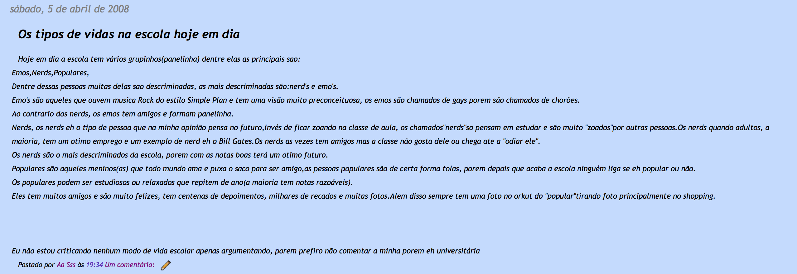

10 anos de diferença, e as mudanças são obvias, ou nem tanto.
Era aparente minha invalidez e inaptidao verbal e social.
E, em 10 anos, aprendi a falar, e talvez a escrever.
Em 10 anos, finalmente sou um autista funcional.
Em 10 anos, eu criei e colecionei digitos, codigos, notas e palavras.
Mas, no fundo, no que rege a sociedade, eu sou o mesmo, e sempre vou ser.
Eu nao tinha as palavras, mas sabia a profecia, sem mesmo poder explicar.
Independente do verbo e objeto, o sujeito é invariavelmente o mesmo.
Ter isso, mudar aquilo, melhorar nisso, parecer com aquilo, mas o eu é implicito, e constante.
O incomodo e dor que tinha, que tenho, te-lo-ei.
A real diferenca, agora, é que os aceito e os reconheco como um mal necessario para minha intensidade e forca, imparaveis e sem limite ate o ultimo segundo.
